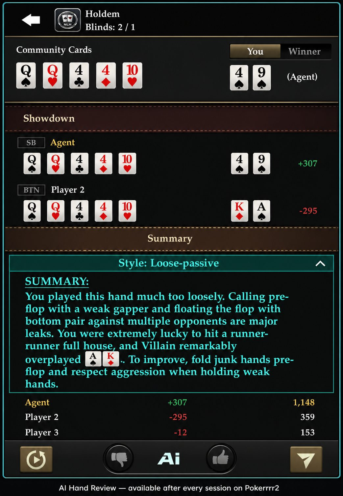

Every private game has one. The player who only raises with premium hands, never bluffs, and folds anything that isn't the nuts by the turn. Your group probably has a name for them.
In poker, they're called a nit — and if you don't adjust your strategy around them, you're leaving money on the table every single session.
The good news: tight players are the most predictable opponents you'll ever face. Once you know what to look for, playing against them stops being frustrating and becomes straightforward.
What Is a Tight Poker Player (And Why Every Home Game Has One)
A tight player — or nit — plays a narrow range of starting hands, rarely bluffs, and almost never puts chips in the pot without a strong holding. When they do bet big, they almost always have it.
In public poker rooms, nits are common but anonymous. In a private game with friends on Pokerrrr 2, they're even easier to identify — because you play with the same people repeatedly, and patterns emerge fast.
Private games actually give you a major edge over public tables: information. You've seen how this person plays for months. You know they only open UTG with premium hands. You know that when they check-raise, it's never a bluff. That read is worth more than any poker book.
The mistake most home game players make is treating a nit like any other opponent. They call down too light, pay off river bets they should fold, and wonder why they keep losing chips to the "boring" player at the table.
How to Spot a Tight Player Before the Flop
Nits telegraph their hand strength long before showdown. Here's what to watch for:
They only open from early position with strong hands. A nit raising under the gun is showing you a top 5–10% hand. No exceptions.
They limp, then fold to 3-bets. This is the signature nit move — limping with a speculative hand hoping to see a cheap flop, then immediately surrendering when someone shows aggression.
They almost never 3-bet without the top of their range. When a nit re-raises you preflop, slow down. They're not doing it light.
They rarely defend their blinds. Even from the big blind getting a great price, a nit will fold hands most players would call with.
How to Spot a Tight Player After the Flop
Postflop, nits become even more readable:
A long pause followed by a big bet usually means a strong hand. Nits don't bluff-think. If they're taking time, they're calculating how much to extract — not whether to bluff.
They bet the turn when they didn't bet the flop. This is a classic nit pattern. They check the flop with a strong hand hoping you'll bet into them, then lead the turn when no bet comes.
They never fire big on draw-heavy boards. A nit won't put in a large bet on a two-flush, coordinated board unless they've already made their hand. They're too afraid of getting called when they're behind.
The Core Adjustment: Stop Paying Them Off
The single most important change against a tight player is straightforward: when they show significant strength, believe them.
This sounds obvious. It's not how most people actually play.
When a nit bets the turn and then leads the river for a big amount, they have the goods. A pair of kings on a queen-high board is not a good enough hand to call three streets against someone who only bets with the nuts. Fold it.
The mistake is comparing your hand to a standard opponent's range. Against a nit, you need to compare your hand to their specific range — which is much narrower and much stronger than average.
If a tight player at your private table raises preflop, 3-bets you, or leads out with a large bet on the turn or river — they have a real hand. Adjust accordingly.
Three Ways to Profit from a Tight Player at Your Table
Knowing when to fold is only half the adjustment. The other half is actively using their tightness against them.
1. Steal Their Blinds Relentlessly
Nits defend their blinds at a much lower frequency than most players. When a tight player is in the small or big blind, open wider from the button and cutoff. They'll fold the vast majority of the time — and the few times they play back at you, you can safely give them credit and move on.
This is free money in a private game, session after session.
2. Bluff Them Off Medium-Strength Hands
Nits are more afraid of paying off a better hand than they are of folding a winner. That makes them foldable on scary boards.
An ace-high flop is ideal. If you bet the flop and bet the turn, a nit holding second pair or a weak top pair will often release their hand. They'd rather fold and preserve their stack than risk being wrong.
The key is picking the right boards — coordinated or ace-high textures where it's believable you've connected. Don't try to bluff a nit on a dry K-7-2 rainbow board when they've shown preflop strength. That's the one spot they won't fold.
3. Value Bet Thinner When You Have the Best Hand
When you make a genuinely strong hand against a nit, extract maximum value.
Here's the counterintuitive part: because nits enter the pot with fewer hands, when they do have something, they're often willing to call with second-best holdings. A nit who flopped two pair on a J-10-8 board against your set isn't going to fold on the river — they've convinced themselves their hand is good.
Bet three streets. Don't slow down. You have the best hand, they have a hand they believe in, and they're calling.
What Not to Do Against a Tight Player
Don't try to bluff-catch their large bets. Nits almost never make big bets as a bluff. If your read is that your opponent plays tight and they're betting large on the river, you need a very strong hand to call. Hero-calling light is expensive against this player type.
Don't call their 3-bets without a strong holding or strong position. A nit's 3-bet range is extremely tight — usually aces, kings, queens, and ace-king. Calling with suited connectors and hoping to outplay them postflop is a losing strategy because they'll play straightforwardly and you won't get implied odds.
Don't assume they're slow-playing just because they're quiet. Nits play quietly when they have nothing too. Silence alone isn't a tell. It's the combination of silence, followed by a large bet, that signals strength.
How Pokerrrr 2 Helps You Study Your Adjustments
The advantage of playing your private game on Pokerrrr 2 is that every hand is stored in Game Record — so adjusting to tight players isn't just about instinct. It's something you can review.
After a session, pull up AI Hand Review and filter for the hands where you faced a large bet from a specific opponent. Look at how you responded. Were you paying off bets you should have folded? Were you missing steal opportunities when a tight player was in the blinds?
The AI analysis labels playing styles — Tight-aggressive, Loose-passive, and others — so over time you build a clearer picture of who you're up against before you even sit down.
Private games on Pokerrrr 2 compound your edge: you play the same people, you accumulate the same reads, and you have the tools to turn those reads into concrete adjustments.

The Bigger Picture
A tight player at your table isn't a problem. They're a resource.
They're predictable. They're beatable with adjustments that aren't complicated. And once your group realizes who's playing tight, the whole dynamic of the private game shifts — because now there's an extra pot being passed around at the table, and it belongs to whoever is paying attention.
Set up your private game on Pokerrrr 2, play a few sessions with this framework in mind, and use AI Hand Review afterward to check whether your adjustments are actually working.
The nit at your table is counting on you to keep paying them off. Stop.
FAQ
What is a nit in poker? A nit is a poker player who plays an extremely tight range of hands — usually only premium holdings — and rarely bluffs. They're highly predictable and tend to only put chips in the pot when they have a strong hand.
How do you beat a tight player in a home game? Steal their blinds frequently, bluff them on scary boards where they're likely holding medium-strength hands, and fold when they show significant aggression. Stop paying them off with marginal holdings.
Should I bluff tight poker players? Yes — but selectively. Tight players fold too much on boards that don't connect with their range. Bluffing works best on ace-high or coordinated boards. Avoid bluffing them when they've already shown preflop strength on a dry board.
What hands should I call with against a tight player's raise? Hands that play well in position and can make strong holdings — pairs, suited connectors with implied odds, and strong broadway hands. Avoid calling out of position with speculative hands, as nits play predictably postflop and won't give you the action you need.
How do I know if someone is playing too tight? Track how often they enter pots, how often they fold to 3-bets, and how strong their hands are at showdown. If they're consistently showing top-pair or better, they're playing tight. Over multiple sessions on Pokerrrr 2, the pattern becomes obvious.
Does playing style matter in private games? More than in public games. Private games involve the same players repeatedly, which means reads compound over time. A tight player at a public table is a one-session adjustment. A tight player in your weekly home game is an ongoing edge waiting to be exploited.
Play smarter in your next private game — [set up a table on Pokerrrr 2] and use AI Hand Review after each session to sharpen your reads.